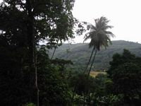
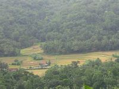
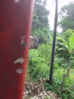
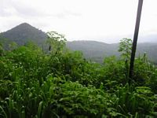
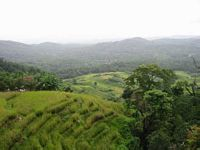
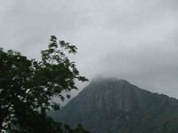
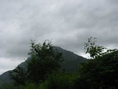
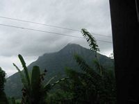
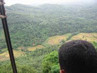
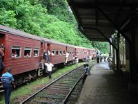
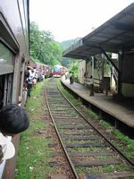
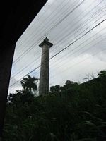
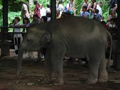
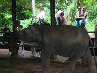
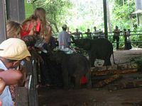
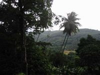
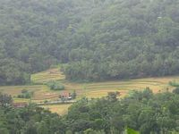
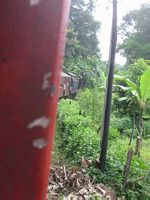
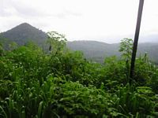
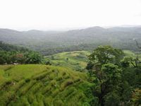
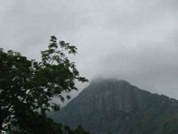
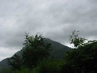
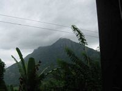
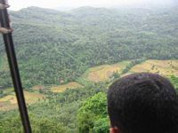
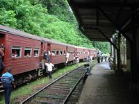
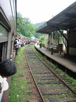
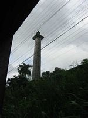
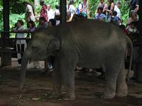
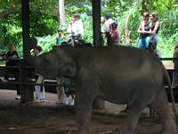
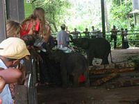
jeudi 21 août
J'arrive a Colombo a 1h du matin, nous sommes accueillis par une foret de chauffeurs de taxi, ça me rappelle Lima. Un taxi m'aborde, me propose 10$ pour aller en ville, et j'accepte après avoir discute des prix avec un autre un europeen qui était dans le meme avion que moi. Nous nous installons dans la voiture, puis il me fait un speech, il travaille pour une agence de voyages et peut me proposer des prix super-canon pour Kandy, visite d'une tea factory, etc... J'ecoute poliment pendant 1/4 d'heure, puis "Shall we ?"Les rues sont desertes. 3/4h plus tard, a 2 minutes de la "Ex-servicemen ? ?" (adresse pas chere que j'ai lue dans le guide) : nouvel arret, il me detaille le voyage qu'il me propose, avec et sans logement, etc... Il remplit une page complété de son carnet, fatigant. Je reste zen. Il me donne son numero de telephone, puis nous y sommes enfin. C'est ferme. Un hôtel. On m'explique que la nuit, il n'y a que des gardiens qui ne sont pas habilites a accueillir des clients. Meme chose à la YMCA juste a côté. Il est deux heures du matin. Il me depose ensuite dans le quartier de la gare, qui grouille parait-il de guesthouses. Nous en essayons une, rien. Il me demande 3 fois si je peux me debrouiller ("you can manage ?"). Je lui dis les 3 fois "yes, no problem !" (Casse-toi). Et me voila tout seul avec mon sac a dos dans le quartier de la gare (qui est aussi le quartier du port), a deux heures du matin, et une vague indication d'une guesthouse dans le coin, tuyau que le chauffeur de taxi tient d'un poivrot sans-logis. Mais au moins je n'ai plus l'autre sur le dos. Les seuls commerces ouverts sont des bars-epiceries près de la gare, aucun hôtel n'est ouvert, je rencontre Michael qui a rate son train la veille et attend celui de 6h50 du matin pour rentrer chez lui. De mon côté je dois attendre l'ouverture des hôtels a 5h30. Il est 2h30. Ce sera clope/coca jusqu'au matin, bonne discussion, Michael est taxi avec des horaires amenages : il travaille 24h puis il à un jour de repos. Sa femme travaille a Monaco depuis 3 mois, et il habite a ? ? a mi-chemin de Kandy. Il me propose de prendre le train de 9h30 a Colombo et de le retrouver le lendemain matin a ? ?.
vendredi 22 août
Je me crashe à la YMCA a 6h30. En debut d'après-midi je fais ma petite promenade. La ville à l'air sous tension, il y a des militaires, des sacs de sable et des barrieres partout. Quelqu'un me parle d'une ceremonie avec des elephants sur l'île aux esclaves, qui se revele assez decevante : deux moines passent un elephant au jet, pas un pet de musique, bref c'est le genre de ceremonie qui doit avoir lieu dix fois par jour dans l'indifference la plus totale. Pourtant il y a quelques visiteurs.Je rentre en passant par la plage, bordée d'hôtels super-luxueux (du moins en apparence), la mer est dechainée, le vent souleve des nuages de sable, plus la pollution, bref c'est pas la joie. Ajoutez a cela les milliers de corbeaux qui sillonent la ville en croassant (les corbeaux, pas la ville), l'atmosphere est lugubre. Je dejeune au restaurant "Seafood", excellent "seafood thermidor" avec du vin australien (ils n'ont pas de demi-bouteille, zut alors). Après ça, et comme je suis en forme, je me rends dans la boite de l'un des grands hôtels, histoire de tater l'ambiance. En quinze minutes c'est fait et je suis rentre à la YMCA, en traversant les checkpoints tenus par des militaires en tenue, il n'y a pas un chat dans les rues.